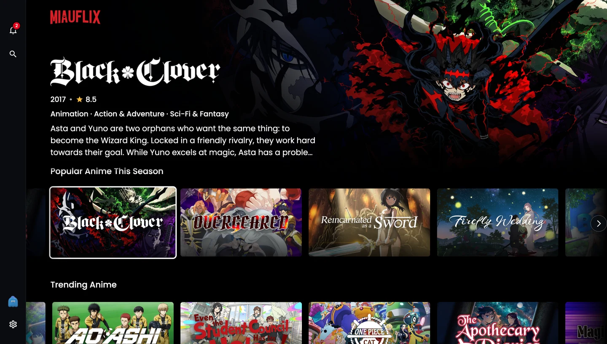
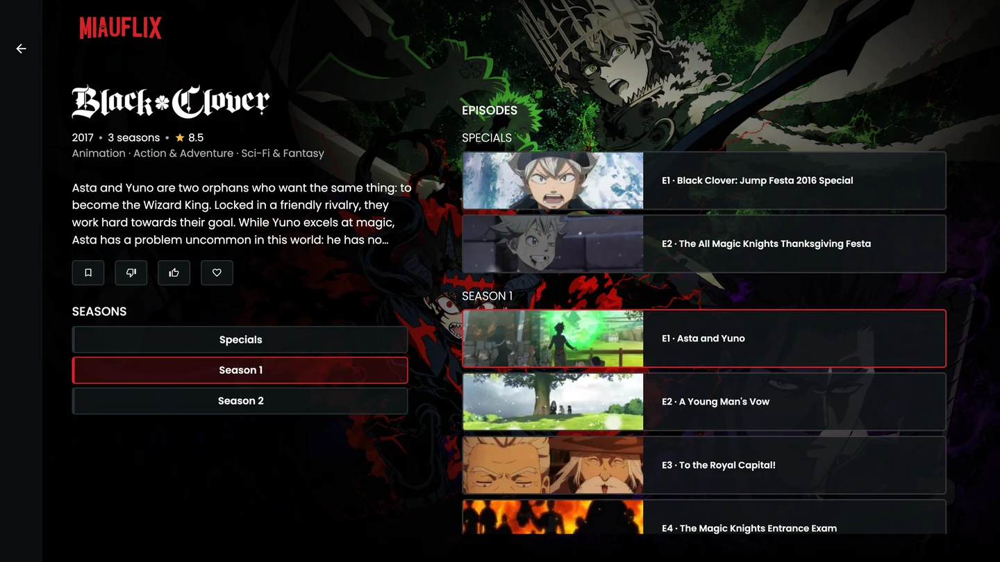
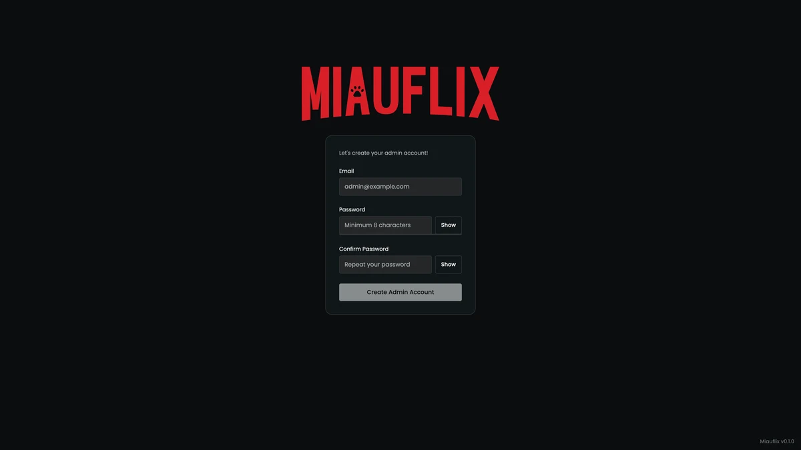
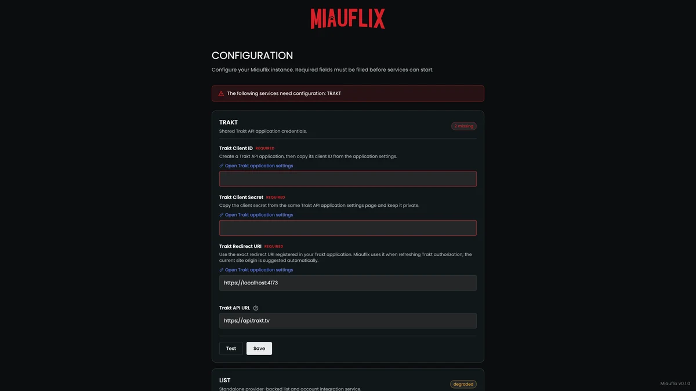

Your own
streaming service.
Browse movies and TV shows, choose what to watch, and stream to your browser. Open source and self-hosted, Miauflix finds sources and prepares playback, with no media library to manage.

Self-hosted
Run on your own server
Browser-based
Watch in your browser
Docker deployment
Get up and running quickly
VPN protected
Required for discovery by default
Background loading
Less waiting when you press play.
Movie night starts before you press play. Miauflix works in the background as you browse, choose, and watch—giving playback a head start.
-
{{icon:search}}
While you browse
Finding your source.
Miauflix searches for sources for the movie you’re exploring. Linger on a title, and it can start warming the stream.
-
{{icon:play}}
While you decide
Getting ready to play.
Open the details and Miauflix begins preparing playback while you read about your choice.
-
{{icon:arrow}}
Before the next episode
Preparing what’s next.
As your episode approaches its end, Miauflix starts downloading the next one in the background.
Take a look inside.





How it works
From catalog to playback.
Miauflix brings the pieces together.
Your server does the work. You choose what’s next.
-
01 Browse the catalog
TMDB provides movie and TV information, artwork, and details.
-
02 Find a source
Your server searches available providers for a playable source on the BitTorrent network.
-
03 Prepare the stream
Media downloads to your server’s storage. Playback can begin while the file downloads.
-
04 Make yourself at home
Watch in your browser or on a supported TV, with playback adapted to your device.
Playback startup depends on the source, your connection, and any conversion needed.
Easy setup
From Docker to movie night.
Your own streaming service, in a few steps.


Docker
Prebuilt images for AMD64 and ARM64. No source build needed.
TMDB access token
A free token for catalog metadata and artwork.
Persistent storage
Space for settings, your viewing data, and downloaded media.
A VPN (by default)
Source discovery and torrent connections require VPN protection unless you opt out.
curl -fsSLO https://raw.githubusercontent.com/maury91/miauflix/main/docker-compose.yml
docker compose up -d
Then open http://localhost:3000, create your admin account, and add your
TMDB token. Complete setup before opening access to other devices.
Configure your VPN
before searching for sources.
Frequently asked questions
A few things to know.
Do I need to maintain a media library? {{icon:chevron}}
No. Miauflix finds sources and prepares playback when you choose a title. Files are downloaded to your server, stored encrypted, and can be reused. You’ll still need enough disk space; Miauflix can free storage while protecting active playback.
Does Miauflix include movies or TV shows? {{icon:chevron}}
Miauflix does not host or distribute content. TMDB supplies catalog information, and your server discovers sources through configured providers. Only access media you are entitled to use, and follow the laws that apply in your country.
Do I need a VPN? {{icon:chevron}}
By default, yes. Source search and the torrent engine check for VPN protection before connecting. The supplied VPN setup uses NordVPN with Gluetun. An opt-out is documented for people who accept that peers can see their IP address; the project advises against opting out on a server.
Read the VPN guide →What devices are supported? {{icon:chevron}}
Miauflix plays in a browser and has a dedicated Samsung Tizen TV app. You can navigate with a keyboard or remote. Supported video and audio formats depend on your browser and device; some files need conversion on the server.
Can I use Miauflix outside my home network? {{icon:chevron}}
Yes, with a properly configured server. Create your administrator account first, then follow the documentation to set up your domain and HTTPS with Caddy. Keep source search and torrent traffic protected by a VPN.
Set up HTTPS →Is Miauflix free and open source? {{icon:chevron}}
Yes. Miauflix is available under the MIT license. You provide the server, storage, internet connection, and any external services you choose to use, such as a VPN.
Your next movie night starts here
Ready when you are.
Follow the guide and make Miauflix your own.